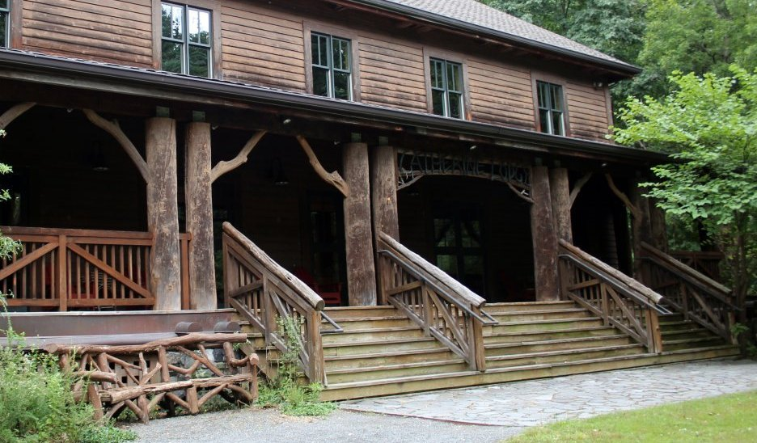
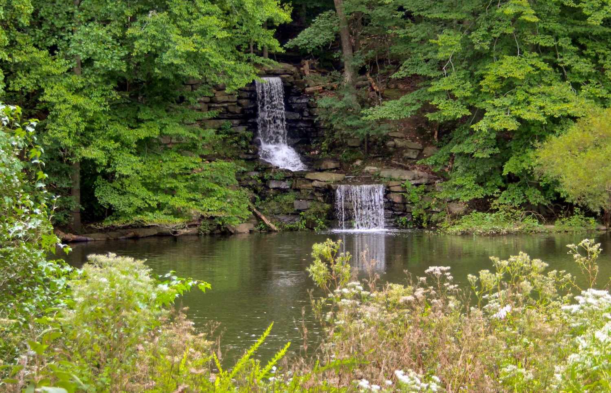
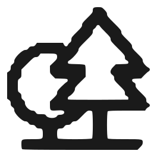

Home / About
Trails are
better shared
We map, maintain and write about long-distance walking and riding routes — and help people get onto them without a fortnight of planning.
What we do
Hiking Trails began as a shared spreadsheet between four people who kept losing track of which rail-trails were surfaced, which bridges were out, and where you could actually park a car overnight. It turned into route guides, then into guided trips.
Everything we publish gets walked or ridden first. If a section is closed, washed out or unpleasant, we say so — a guide that only reports the good parts is not a guide.
We work with state park services and volunteer trail crews rather than around them, and a share of every booking goes back into the crews doing maintenance.

How we work
Three things we will not compromise on, however inconvenient they get.
Walked, then written
No route goes live from a map alone. Someone covers it end to end and files the problems as well as the views.

Leave it better
We pack out more than we bring in, and fund the volunteer crews who do the unglamorous work of keeping tread open.
Quiet by default
Small groups, early starts, and a firm line on staying out of nesting areas in season.
Come and walk with us
Tell us your dates and we will put a route together.